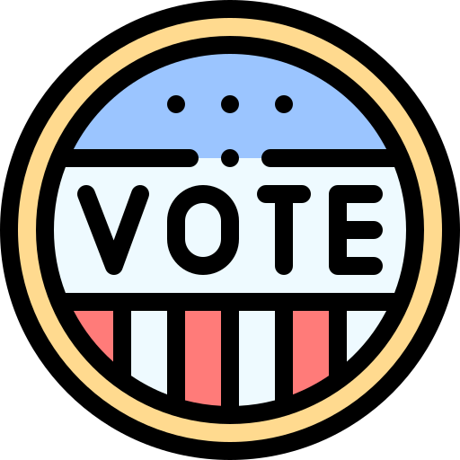

Research Projects
My goal as a professional is to foster empathy between and greater levels of accessibility for those around me through iterative, human-centered research and design.

Ann Arbor City Clerk
Worked with Ann Arbor City Clerks, voting rights officials, and blind voters to make the voting process more transparent and accessible.
Read more here.

City of Lansing - OEM
Utilized a variety of user research techniques to better connect Lansing residents to the Office of Emergency Management and its disaster mitigation services.
Read more here.
Family Independence Initiative
Led a comprehensive usability review of a family-focused financial tech nonprofit.
Read more here.

City of Lansing - OFE
Guided the Office of Financial Empowerment as it tried to maintain financial education and guidance services during the pandemic through user research and design techniques.
Read more here.